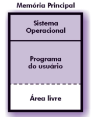
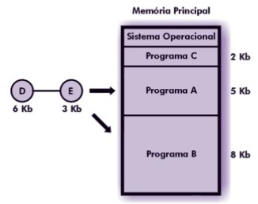

Gerência de Memória
1. Hierarquia de Memória
- Registradores: manipulados diretamente pela CPU.
- Cache: controlada pelo hardware, armazena dados frequentemente acessados.
- Memória Principal (RAM): onde os programas são carregados e executados.
- Memória Secundária (Disco): armazenamento persistente, abundante e barato, mas com acesso muito mais lento.
Observações:
- O SO transfere programas da memória secundária para a memória principal para execução,com o objetivo de:
- Maximizar o número de processos residentes.
- Compartilhar recursos de forma eficiente.
2. Alocação Contígua Simples
-
Utilizada em sistemas monoprogramáveis.
-
Memória principal dividida em duas áreas:
- Área do SO.
- Área para programas do usuário.
-
O programador precisava apenas garantir que não ultrapassaria o espaço disponível.
-
Proteção: um registrador delimita a área do usuário, evitando acesso ao SO.
-
Desvantagens:
- Sempre haverá algum espaço de memória livre desperdiçado.
- Apenas um usuário/programa pode usar os recursos por vez.

3. Técnica de Overlay
- Programa dividido em módulos.
- Um módulo comum permanece durante toda a execução.
-
Outros módulos são carregados sob demanda em uma área de overlay (mesmo espaço de memória).
-
Vantagem: Permite executar programas maiores do que a memória disponível.
-
Desvantagem: Exige cuidados extras do programador e difícil manutenção.

4. Alocação Particionada
Permite que diversos programas residam na memória principal ao mesmo tempo.
4.1 Alocação Particionada Estática
- Memória dividida em partições fixas.
- Se fosse necessário mudar o tamanho, o sistema precisava ser reiniciado.
1. Absoluta: Programas só podiam ser carregados em uma partição específica.

2. Relocável: código adaptado para ser carregado em qualquer partição.
- Usa tabela com endereço inicial, tamanho e status (livre/ocupada).
- Proteção com dois registradores (limite inferior e superior).

4.2 Alocação Particionada Dinâmica
- Partições criadas sob demanda, conforme o tamanho dos programas.
-
Problema: fragmentação externa.
-
Espaços livres espalhados pela memória.
-
Soluções:
- Combinar espaços adjacentes quando liberados.
- Relocar programas, compactando a memória.
4.3 Estratégias de Alocação
Best-fit:
- Escolhe a menor partição possível.
- Desvantagem: tende a gerar muitas áreas pequenas.
Worst-fit:
- Escolhe a maior partição.
- Vantagem: mantém áreas livres maiores.
First-fit:
- Escolhe a primeira partição suficiente.
- Mais rápida, mas pode deixar grandes fragmentos no fim da memória.

5. Swapping
- Técnica para contornar a insuficiência de memória.
- Antes: um processo permanecia na memória até terminar.
- Com swapping: um processo pode ser temporariamente movido para o disco (memória secundária) e substituído por outro.
5.1 Características
- Escolha de processos para swap prioriza aqueles menos prováveis de serem escalonados.
- Loader com registrador de relocação garante retomada correta.
5.2 Problemas
- Alto custo de operações de entrada/saída.
- Thrashing: ocorre quando o sistema passa mais tempo trocando processos entre RAM e disco do que executando instruções.
6. Considerações Finais
- A gerência de memória busca equilibrar uso eficiente da RAM, velocidade de acesso e compartilhamento entre processos.
- As técnicas evoluíram de modelos simples (monoprogramação) até sistemas mais complexos (multiprogramação com swapping e estratégias avançadas).